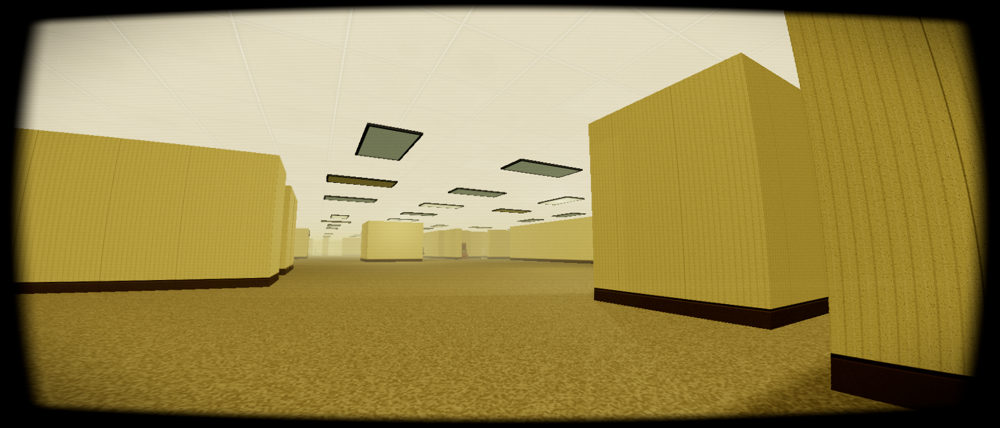

Level 0 Engine · Procedural Raycasting & Creative Determinism
The dark is not empty.
Level 0 Engine is not quite a game, and not quite not a game. It is an exploration of mathematical recursiveness and creative determinism. It is also a procedural 3D raycaster running natively in the browser with zero build steps and no asset packs. Instead of downloading gigabytes of pre-baked textures, it computes its liminal yellowing wallpaper, damp carpets, and fluorescent drone entirely on the fly from a single seed. Settle the cold case, restore the grid, and file the finding of fact before the maze takes you.
Zero-Dependency ES6 · Runs locally in the browser
SYS.STATUSONLINE
SECTORS13 MACRO
HAZARDSACTIVE
ENTITYROAMING
C:\LEVEL0>
Architecture & Engine
Procedural math, native to the browser.
The engine runs on native ES6 modules and WebGL via Three.js with zero build steps and no heavy asset pipelines. An O(1) Spatial Hash Grid powers instantaneous collision queries, zero-allocation scratch vectors eliminate garbage-collection stutter, and a fixed hardware shadow pool with hysteresis keeps dynamic lighting smooth and atmospheric without popping.
| Renderer | WebGL via Three.js |
|---|---|
| Modules | Native ES6 |
| Collisions | O(1) spatial hash grid |
| Performance | Zero-allocation scratch vectors, 60fps |
| Lighting | Fixed shadow-caster pool with hysteresis |
| Post | Chromatic aberration, CRT scanlines, vignette |
| Audio | Live DSP, muffled through walls |
| Install | None; runs locally in the browser |

The rules of the labyrinth
How to survive
The facility generated a unique cold case just for you. Find notes, laptops, and tapes to unravel it. Unverified documents burden your mind. You must corroborate claims by finding matching evidence in entirely different sectors.
-
Sanity
Manage your sanity
The Flashlight & Mental Load
The dark exacts a toll. Carrying unverified claims and roaming through pitch-black sectors accumulates tension, degrading your flashlight's maximum charge. Corroborate claims across sectors to settle facts and restore your sanity baseline. If your psyche fractures below 50%, the walls begin to hallucinate.
-
Entity
The wandering hunter
The Anomaly
It stalks by sight and sound, accelerating the more exhausted you become. Catching the Anomaly directly in your focused beam freezes it in its tracks, but drives up its agitation. If it overtakes you, reality collapses and re-seeds around an entirely new cold case.
-
Sectors
Sector anomalies
Environmental Hazards
Each macro-sector carries its own localized rules. In the Incinerator, never break eye contact with the Ember. In the Archive, the Archivist observes from the periphery. Whatever you do, do NOT sprint toward it. In the Atrium, keep moving under overhead shelves; lingering in the open invites the ceiling rig down.
-
Power
Restore the grid
Surge Breakers
The exit elevator requires full auxiliary power. You must navigate the labyrinth to locate three rare Dimensional Breakers. Throwing each switch triggers a temporary sector blackout before the local grid stabilizes.
-
Verdict
Submit the truth
Finding of Fact
Once all breakers are thrown and the elevator key is retrieved, the exit dynamically manifests in the next unvisited sector. The terminal demands your Finding of Fact: submit the correct verdict based on corroborated evidence. File the truth to escape; file wrong, and the anomaly claims the record.
COLD CASEGENERATED PER SESSION
EVIDENCECORROBORATE ACROSS SECTORS
FINDING OF FACTPENDING
Keep this nearby
The useful controls
The labyrinth demands constant movement and resource management.
A · Movement
Navigate
- WASD
- Move
- Mouse
- Look
- Shift
- Sprint (Draws stamina)
- Space
- Jump
B · Interaction
Engage
- E
- Interact / Pick Up
- LMB
- Toggle Flashlight
- RMB
- Focus Beam (Burns charge rapidly)
- R
- Reload Flashlight Battery
C · Equipment
Tools
- J
- Open Personal Journal (Amber PDA)
- M
- Raise/lower Threshold Compass
- P
- Raise/lower Paintball Gun
- X
- Capture Asset (Screenshot)
D · System
Control
- V (Hold)
- Close Eyes (Calms nerves, blinds you)
- TAB
- Open System Terminal (Settings)
- ESC
- Release Pointer Lock / Pause
A unique labyrinth awaits.
Pick a seed.
Step inside.
A deterministic cold case is waiting to be solved.